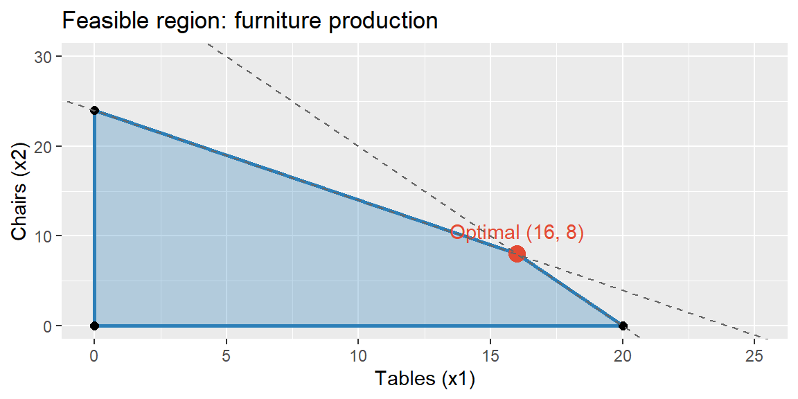

Every module so far has helped make sense of the world as it is, or predict what it’s likely to become: summarizing evidence (Module 1), quantifying uncertainty (Module 2), comparing groups (Module 3), predicting one variable from others (Module 4), and forecasting a value forward in time (Module 5). This final module turns to the last step of the analytics decision cycle (Chapter 2) in its most literal form: recommend an action. Linear optimization (also called linear programming, or LP) doesn’t just describe or predict, it computes the mathematically best decision available, given the real limits a business actually faces on money, time, labor, or materials.
32.2 What Is Linear Optimization?
Linear optimization finds the values of a set of decision quantities that maximize or minimize some goal (profit, cost, time), subject to a set of linear constraints representing limited resources. “Linear” means every relationship in the model, the goal and every constraint, is a straight-line combination of the decision quantities: constants multiplied by variables, added together, nothing squared, multiplied together, or otherwise curved. That’s a real restriction, but an enormous range of practical business problems, how much of each product to make, how to allocate a budget across projects, how to staff shifts, are naturally linear or close enough to be modeled that way.
32.3 The Building Blocks of a Linear Program
Every linear program has three pieces:
Decision variables: the quantities the decision-maker actually controls, typically written \(x_1, x_2, \ldots\). These are the answer the model produces.
Objective function: a linear function of the decision variables to be maximized (profit, output) or minimized (cost, time), written \(Z = c_1x_1 + c_2x_2 + \cdots\).
Constraints: linear inequalities (or equalities) limiting which combinations of decision variables are actually achievable, almost always reflecting a limited resource (labor hours, raw material, budget, machine time). Nearly every real decision quantity also carries an implicit non-negativity constraint (\(x_1 \geq 0\), \(x_2\geq0, \ldots\)), since you can’t produce a negative number of anything.
32.4 A Worked Example: Product Mix
ExampleExample 13.1: A furniture company's weekly production decision
A small furniture company makes tables and chairs and wants to decide how many of each to produce this week to maximize profit.
Each table sells for a profit of $50, and each chair for a profit of $40.
Each table requires 20 board-feet of wood; each chair requires 10 board-feet. Only 400 board-feet of wood are available this week.
Each table requires 1 hour of assembly labor; each chair also requires 1 hour. Only 24 hours of assembly labor are available this week.
In words: decide how many tables and chairs to make this week to maximize profit, without using more wood or labor than is actually available.
Excel’s Solver add-in (File > Options > Add-ins if not already enabled, then found under the Data tab) is the standard tool for this kind of problem, and the one this module builds around.
ExampleExample 13.2: Setting up Solver
Lay out the model on the worksheet: one cell for each decision variable (\(x_1\), \(x_2\)), one cell computing the objective (\(=50\times x_1\text{ cell} + 40\times x_2\text{ cell}\), or SUMPRODUCT() against the profit coefficients), and one cell for each constraint’s left-hand side (=20*x1_cell + 10*x2_cell for wood, =x1_cell + x2_cell for labor).
Open Solver and set:
Set Objective: the profit cell, set to Max.
By Changing Variable Cells: the \(x_1\) and \(x_2\) cells.
Subject to the Constraints: the wood cell \(\leq\) 400, the labor cell \(\leq\) 24.
Select a Solving Method: Simplex LP (the algorithm for linear problems), and check Make Unconstrained Variables Non-Negative.
Click Solve.
Solver returns \(x_1=16\) tables, \(x_2=8\) chairs, for a maximum weekly profit of $1,120.
32.6 The Feasible Region
The set of every combination of \(x_1\) and \(x_2\) satisfying every constraint at once is called the feasible region. With only two decision variables, it can be drawn directly, and doing so makes Solver’s answer visually obvious.
ExampleExample 13.3: Graphing the feasible region
library(tidyverse)feasible <-tibble(x1 =c(0, 20, 16, 0),x2 =c(0, 0, 8, 24))ggplot() +geom_polygon(data = feasible, aes(x = x1, y = x2), fill ="#2c7fb8", alpha =0.3) +geom_path(data = feasible[c(1,2,3,4,1), ], aes(x = x1, y = x2), color ="#2c7fb8", linewidth =1) +geom_point(data = feasible, aes(x = x1, y = x2), size =2) +geom_point(aes(x =16, y =8), color ="#e34a33", size =4) +annotate("text", x =16, y =8, label ="Optimal (16, 8)", vjust =-1, color ="#e34a33") +geom_abline(intercept =40, slope =-2, linetype ="dashed", color ="gray40") +geom_abline(intercept =24, slope =-1, linetype ="dashed", color ="gray40") +coord_cartesian(xlim =c(0, 25), ylim =c(0, 30)) +labs(title ="Feasible region: furniture production", x ="Tables (x1)", y ="Chairs (x2)")

The shaded region is every production plan that respects both the wood and labor limits at once. The two dashed lines are each constraint’s boundary; the region only extends as far as both are satisfied simultaneously.
A key fact about linear programs, one worth internalizing rather than just taking on faith, is that the optimal solution always occurs at a corner (vertex) of the feasible region, never in the interior and never along an edge alone (except in the rare case of a tie between two adjacent corners). This is why solving an LP is really just a matter of checking a handful of corner points rather than searching the entire, infinite feasible region.
ExampleExample 13.4: Checking every corner
The feasible region above has four corners. Evaluating the objective \(Z=50x_1+40x_2\) at each:
Corner
\(x_1\) (tables)
\(x_2\) (chairs)
\(Z\) (profit)
A
0
0
$0
B
20
0
$1,000
C
16
8
$1,120
D
0
24
$960
Corner C, exactly the intersection of the wood and labor constraints, gives the highest profit, confirming Solver’s answer. Notice that neither constraint’s axis intercept alone (B or D) beats the corner where both resources are used together.
32.7 Verifying the Solution in R
R can verify a Solver result (or solve the problem directly) using a dedicated linear programming package. Per this course’s usual division of labor, Excel Solver is the primary tool for this module (the upcoming Petro Refinery case is built around it), and R serves to check the answer or visualize the problem, exactly as Example 13.3 already did for the feasible region.
lpSolve finds the identical answer, 16 tables, 8 chairs, $1,120 in profit, confirming the Solver result from Example 13.2.
32.8 Recap
Keyword
Definition
Linear optimization (linear programming)
Finding the values of decision variables that maximize or minimize a linear objective, subject to linear constraints.
Decision variable
A quantity the decision-maker controls; the model’s output.
Objective function
The linear goal (to maximize or minimize), a weighted sum of the decision variables.
Constraint
A linear inequality or equality limiting achievable combinations of decision variables, typically reflecting a limited resource.
Non-negativity constraint
The (usually implicit) requirement that decision variables cannot be negative.
Feasible region
The set of all decision-variable combinations satisfying every constraint simultaneously.
Corner point (vertex)
A point where two or more constraint boundaries intersect; the optimal LP solution always occurs at one.
Excel Solver
Excel’s add-in for solving optimization problems; this module’s primary tool.
lpSolve
An R package for solving linear programs; used here to verify and visualize Solver’s results.
32.9 Check Your Understanding
NoteProblems
A company can produce two products, A and B. Identify which part of an LP formulation (decision variable, objective function, or constraint) each of the following represents: (a) “the number of units of Product A to produce,” (b) “total contribution margin,” (c) “no more than 500 hours of machine time are available.”
Explain, in your own words, why a linear program’s optimal solution is always found at a corner of the feasible region rather than somewhere in the interior.
A feasible region has corners \((0,0)\), \((10,0)\), \((6,4)\), and \((0,8)\). The objective is to maximize \(Z=8x_1+9x_2\). Evaluate \(Z\) at each corner and identify the optimal solution.
Why does this course teach Excel Solver as the primary tool for linear optimization, rather than R, unlike every module before it?
A student sets up a production LP but forgets to include non-negativity constraints. Explain what could go wrong with the resulting solution.
TipSolutions
is a decision variable (\(x_A\), the quantity the company controls). (b) is the objective function (the linear goal being maximized). (c) is a constraint (a linear limit on a resource, machine time).
Because the objective function is linear, its value changes at a constant rate in every direction across the feasible region, it never curves back on itself. This means the objective can never have a maximum (or minimum) tucked away in the interior; it can only stop improving once it’s pushed as far as possible in some direction, which happens exactly where the feasible region’s boundary, and specifically a corner where two boundaries meet, is reached.
\(Z(0,0)=0\); \(Z(10,0)=80\); \(Z(6,4)=8(6)+9(4)=48+36=84\); \(Z(0,8)=72\). The optimal solution is \((6,4)\), giving \(Z=84\).
Because the Petro Refinery case, the applied work built around this module, is itself designed around Excel Solver, and Solver is the standard, widely available business tool for this class of problem. R (via a package like lpSolve) remains useful for verifying a Solver result or visualizing a feasible region, as in Examples 13.3 and 13.5, but this module treats Excel as primary rather than secondary.
Without non-negativity constraints, the Simplex algorithm is free to consider negative production quantities as “feasible,” which makes no physical sense (a company cannot produce \(-5\) tables) and could produce an optimal solution that isn’t actually achievable in reality, or that misrepresents how much of the limited resources are truly needed.